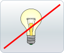
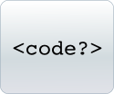

How to Misunderstand Free Software
Five misconceptions about free software, corrected.
1. The software industry can't keep going if programmers don't get paid.

Let's begin with one simple fact: free software programmers do like to get paid, and all need to buy lunch at some time.
When we mention free software, we refer to liberty not price. You may actually pay to get free software (or "open source" software 1), which you can then study, change and copy at will.
How does it work? You can think about it the following way: software is just code, code is only math. Once you view software as useful math, an elaborate language, not like ordinary property, there is no reason to restrict others' use of it.
Just like math (where nobody would claim property on an equation), software requires advanced knowledge to be adapted, improved, applied correctly. This is where programmers generally generate an income: many customers, especially companies, are willing to pay for regular security updates and improvements on software.
Free software companies benefit from a very decentralised development system with a large number of voluntary contributors. The revenues inside the free software industry might be smaller than in the proprietary counterpoint, but are by no means negligible. In the end, individual users generally end up using free software at no cost.
Free software is not about killing incentives for programmers. It's about seeing code as knowledge which should not be hidden from the user. It works with a different business model, in which many companies already do well.
2. Innovation is killed in free software.
The common perception is that if everyone can copy ideas, innovation will be stifled.
In fact, freedom is often the key to innovative and successful software.
- Anyone is allowed and encouraged to work upon it;
- Many people are willing to participate;
- There is no need to re-invent everything, ideas can be improved upon directly.
Non-proprietary software stands out in many areas: consider, to name just a few:
- Applications: Firefox (web browser), Inkscape (vector drawing).
- Complete systems: Apache (web server), OpenBSD (OS), and of course, GNU/Linux.
- Formats and protocols: HTML (web pages), BitTorrent (file sharing), ODF (office documents).
- Server applications: Drupal (Content Management System), Wordpress (blog).
3. Software Should Just Work (who cares about source code?)
Anyone should care about whether their software is free.
Imagine purchasing a car whose hood you are forbidden to open. It does not matter whether you know how a car works – the point is that nobody will be able to check the engine. How can you trust your car, if no one is allowed to make sure that it's reliable, that it does not leak, that it's not harmful to the society and environment?
The idea is the same with software – except that code does much more than move cars. Software runs our computers, phones, TVs, media players and more, carrying information and our culture.
Free software is as important as free speech, as a free market. If software is free, users have control and liberty over it.
The good news are: free software also Just Works. And in fact, it often Just Works Better. Pop in a GNU/Linux liveCD in your computer at start-up, to try a full-featured, well-organised system, without installation, so you can judge by yourself.
4. Free software doesn't respect authors' copyrighted and patented software.

To answer this correctly, we must first make a clear distinction between copyright and patents. Copyright is a right granted to the author over his/her creation (for example, the text of a book, or the source code of a program). A patent, on the other hand, is a purchased, registered exclusive control over a process, the application of an idea.
Copyright is very important in free software. It is the very mechanism, central to the GNU General Public License, which ensures that free software remains free, and that authors are credited for their work. Programs are copyrighted, whether they are free or proprietary.
Any proprietary software author can easily check that his copyright is not violated in a free software application, since its source code is readily available.
Patents in software, on the other hand, are a very controversial concept. To put it shortly: there is no such thing as a "patented software". By registering for a patent, however, someone can claim ownership over a process. The patent then applies to all software that use this process, whether proprietary or free.
Software patents:
- Are expensive and are granted only several years after application;
- Are limited geographically (a patent granted in the US is worthless in Europe);
- Have long life-times (often 20 years) in a quickly-moving industry;
- Often apply entirely trivial processes.
As such, they are seldom used to benefit innovators (and in fact, rarely used by the innovators themselves).
It's safe to say that any medium-size piece of software violates patents, in several countries, whether it's free or not.
Depending on the holding company's ability to cover very large legal costs, or to retaliate with other patent threats, royalties and restrictions can be applied over these patents.
5. Free software is like communism.
Supporters of this idea argue that there can be no private ownership with free (or "open source" 2) software. Let's answer this with an example.
Let's imagine that you use one application that is free software, at home and within your company. You find a great way to improve it, so now with your modified version, your computer works better and your factories run twice as fast!
This modified version is your own version. You are not required to tell anyone about it, nor must you share any of the profits you made using it. You are simply exerting your freedom to use and modify free software.
What the free software license requires is that if you redistribute this software, then you must keep it free. Namely, if you sell CDs with your software on them, or start letting people outside your home or company use it, then you must:
- Either give everyone the same rights you had when you obtained the original software, that is, the freedom to inspect, modify and redistribute your modified version;
- Or, make the original software and your secret addition to it clearly separate (that is, your addition should contain none of the original work).
So in fact, you have more "ownership" over free software than over proprietary software –where the programmer decides everything you can and can't do with the software.
Free software has nothing to do with a political system. You can run free software on top of proprietary software, just as well as the opposite. The free software license is simply a legal, ethical contract between the programmer and the end-user.
Read more:
Free / "open-source" software can't be secure.
The argument generally goes that since the source code of free software is available, it is less likely to be secure.
Short answer: The majority of servers run free software. They are the major networked computers holding sensitive or confidential information such as your bank details or trade secrets.
A more precise answer is that availability of source code is a warrant of security, not a weakness. The freedom of the software ensures it can be inspected, tested and improved by a very wide community. A good lock is secure because the technology used to design it is open, though only the key holder can open it. The same goes for software.
Need examples? Have a look at the Firefox browser, the Apache HTTP Server, the OpenPGP encryption system, or the OpenBSD operating system. And there are no spyware or viruses under GNU/Linux.
I'm on my own with free software.
Not at all.
- If you are looking for good documentation and support forums to assist you, there is plenty available for free ("open source") software.
Each GNU/Linux distribution has its own community (for example, Ubuntu support or Fedora docs), but there are also general free software help communities, like Nuxified.org. - If you need someone you can reach on the phone anytime to assist you, the companies behind most distributions provide commercial support: see the Ubuntu Commercial Support or Red Hat Enterprise Linux pages for example.
Further reading on the web
The GNU project
This is where free software all started. You will find a wealth of information about the free software philosophy, the history of the project, and the stands taken by the Free Software Foundation (the organisation behind GNU).
The FLOSS concept booklet
The concept of Free / Libre / Open Source Software presented in a highly readable, friendly way. A must-read.
The OpenDocument Fellowship
A simple and clear website about the free format OpenDocument, showing the importance of freedom in formats (not just in applications).
Free Software and Free Knowledge
An engaged article by co-founder of Wikipedia Jimmy Wales, which shows the connections between freedom in software and free knowledge.